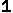

<!--
============================================================
Capturing The Mouse Position in IE4-6 & NS4-6
(C) 2000 www.CodeLifter.com
Free for all users, but leave in this  header
//-->

<html>
<body onLoad="setTimeout('moveIt()', 2000)">

<!-- Part One:
Set up a form named "Show" with text fields named "MouseX"
and "MouseY".  Note in the getMouseXY() function how fields
are addressed, thus: document.FormName.FieldName.value
//-->

<form name="Show">
<input type="text" name="MouseX" value="0" size="4"> MX<br>
<input type="text" name="MouseY" value="0" size="4"> MY<br>
<!--<input type="text" name="ImageX" value="0" size="4"> IX<br>
<input type="text" name="ImageY" value="0" size="4"> IY<br> -->
<script language="JavaScript" type="text/javascript">
	for(var j=1;j<=100;j++){
		var x=Math.floor(Math.random()*1920);
		var y=Math.floor(Math.random()*1080);
		document.write('');
	}
</script>
</form>

<!-- Part Two:
Use JavaScript ver 1.2 so older browsers ignore the script.
The <script> must be *after* the <form> -- since the form
and fields must exist *prior* to being called in the script.
//-->

<script language="JavaScript1.2">
<!--
// Detect if the browser is IE or not.
// If it is not IE, we assume that the browser is NS.
var IE = document.all?true:false
// If NS -- that is, !IE -- then set up for mouse capture
if (!IE) document.captureEvents(Event.MOUSEMOVE)
// Set-up to use getMouseXY function onMouseMove
document.onmousemove = getMouseXY;
// Temporary variables to hold mouse x-y pos.s
var tempX = 0
var tempY = 0
// Main function to retrieve mouse x-y pos.s
function getMouseXY(e) {
  if (IE) { // grab the x-y pos.s if browser is IE
    tempX = event.clientX + document.body.scrollLeft
    tempY = event.clientY + document.body.scrollTop
  } else {  // grab the x-y pos.s if browser is NS
    tempX = e.pageX
    tempY = e.pageY
  }  
  // catch possible negative values in NS4
  if (tempX < 0){tempX = 0}
  if (tempY < 0){tempY = 0}  
  // show the position values in the form named Show
  // in the text fields named MouseX and MouseY
  document.Show.MouseX.value = tempX
  document.Show.MouseY.value = tempY
  //document.Show.ImageY.value = document.images[0].style.top.replace(/px$/,"");
  //document.Show.ImageX.value = document.images[0].style.left.replace(/px$/,"");
  return true
}
function moveIt(){
	var mx=document.Show.MouseX.value;
    var my=document.Show.MouseY.value;
	for(var i=0;i<document.images.length;i++){
  		var ix=document.images[i].style.left.replace(/px$/,"");
    	var iy=document.images[i].style.top.replace(/px$/,"");
		var dx=mx-ix;
		var dy=my-iy;
		delx=dx>0?1:(dx==0?0:-1);
		dely=dy>0?1:(dy==0?0:-1);
		if(delx>0){
			document.images[i].src="num3.gif";
			if(dely>0){
				document.images[i].src="num4.gif";
			} else if(dely==0){
				document.images[i].src="num3.gif";
			} else if(dely<0){
				document.images[i].src="num2.gif";
			}
		}else if(delx==0){
			document.images[i].src="num3.gif";
			if(dely>0){
				document.images[i].src="num5.gif";
			} else if(dely==0){
				document.images[i].src="num3.gif";
			} else if(dely<0){
				document.images[i].src="num1.gif";
			}
		}else if(delx<0){
			document.images[i].src="num7.gif";
			if(dely>0){
				document.images[i].src="num6.gif";
			} else if(dely==0){
				document.images[i].src="num7.gif";
			} else if(dely<0){
				document.images[i].src="num1.gif";
			}
		}
		document.images[i].style.left=Number(ix)+delx;
		document.images[i].style.top=Number(iy)+dely;
	}
	//document.Show.ImageY.value = document.images[0].style.top.replace(/px$/,"");
    //document.Show.ImageX.value = document.images[0].style.left.replace(/px$/,"");
	setTimeout("moveIt()", 10);
}
//-->
</script>
</body>
</html>